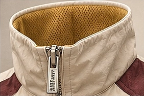

The signature wave
Curved panels carry the palette across the jacket and around the leg.
Ivory Oxblood
A high-collar taffeta jacket and straight-leg track pant, cut with the house’s signature wave.
Select your piece
Curved panels carry the palette across the jacket and around the leg.

A high funnel neck with a muted mustard cotton mesh lining.
An embroidered shield at the wearer’s left chest and left thigh.